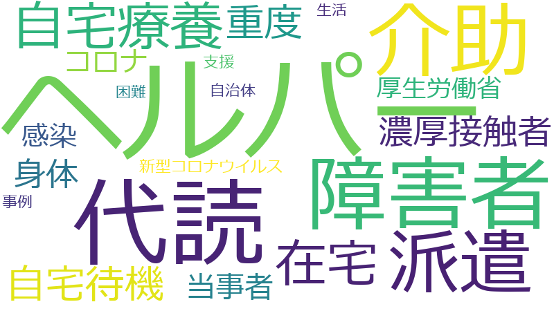

ヘルパー 、派遣 、障害者 、介助 、代読 、コロナ 、在宅 、支援 、自宅療養 、事例 、厚生労働省 、困難 、当事者 、感染 、新型コロナウイルス 、濃厚接触者 、生活 、自宅待機 、自治体 、身体 、重度
ヘルパー 、代読 、障害者 、介助 、派遣 、自宅療養 、在宅 、自宅待機 、重度 、濃厚接触者 、身体 、当事者 、コロナ 、感染 、厚生労働省 、新型コロナウイルス 、支援 、生活 、自治体 、事例 、困難